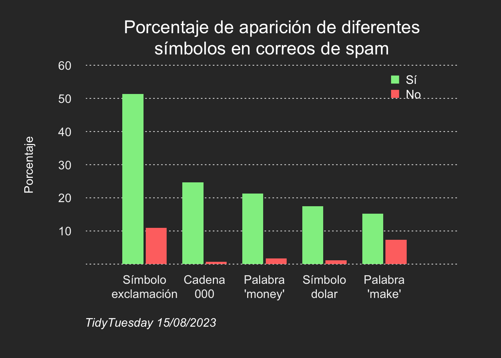

spam <- readr::read_csv('https://raw.githubusercontent.com/rfordatascience/tidytuesday/master/data/2023/2023-08-15/spam.csv')
library(tidyverse)Símbolos comunes en correos de spam
2023
Plot
baseR
TidyTuesday del 15 de agosto de 2023
El el TidyTuesday de esta semana (Rfordatascience, 2023), los datos que tenemos son sobre la aparición de los símbolos más comunes en los correos electrónicos de spam. Esta vez solo hay un dataset, lo que facilita el trabajo a la hora de realizar el gráfico final. Además, en vez de usar ggplot2, el gráfico estará hecho únicamente con las herramientas básicas de R.
Despúes de cargar los datos, seleccionaremos únicamente aquellos que nos interesan y los adecuaremos para poder utilizarlos sin problemas.
head(spam)# A tibble: 6 × 7
crl.tot dollar bang money n000 make yesno
<dbl> <dbl> <dbl> <dbl> <dbl> <dbl> <chr>
1 278 0 0.778 0 0 0 y
2 1028 0.18 0.372 0.43 0.43 0.21 y
3 2259 0.184 0.276 0.06 1.16 0.06 y
4 191 0 0.137 0 0 0 y
5 191 0 0.135 0 0 0 y
6 54 0 0 0 0 0 y spam_1 <- spam |>
mutate(yesno = factor(yesno, levels = c("y", "n"), labels = c("yes", "no")),
dollar = dollar * 100,
bang = bang * 100,
money = money * 100,
n000 = n000 * 100,
make = make * 100)
spam_plot <- spam_1 |>
group_by(yesno) |>
summarize(dollar = mean(dollar),
bang = mean(bang),
money = mean(money),
n000 = mean(n000),
make = mean(make)) |>
pivot_longer(
cols = dollar:make,
names_to = "Spam_signs",
values_to = "value"
) |>
pivot_wider(
names_from = yesno,
values_from = value
) |>
ungroup() |>
arrange(desc(yes))
spam_plot$Spam_signs[1] <- "Símbolo\nexclamación"
spam_plot$Spam_signs[2] <- "Cadena\n000"
spam_plot$Spam_signs[3] <- "Palabra\n'money'"
spam_plot$Spam_signs[4] <- "Símbolo\ndolar"
spam_plot$Spam_signs[5] <- "Palabra\n'make'"Una vez preparados los datos, es hora de hacer el gráfico final (un proceso algo más complicado que usando ggplot2, pero sin ser tampoco especialmente difícil), un gráfico de barras.
# Código para guardar el gráfico en un archivo
# jpeg(file = path,
# width = 1800,
# height = 1200,
# res = 300)
# Fondo
par(bg = rgb(50, 50, 50, maxColorValue = 255),
mar = c(6, 6, 4, 3))
plot(1, xlab = "", ylab = "", xaxt = "n", yaxt = "n", main = "", bty = "n",
type = "n", ylim = c(0, 60), xlim = c(.25, 6))
# Líneas
abline(h = seq(0, 60, 10),
lty = 3,
col = gray(0.95), lwd = 1)
# Etiquetas del eje y
mtext(text = seq(10, 60, 10),
side = 2, at = seq(10, 60, 10),
las = 1, line = 1, col = gray(0.95))
# Etiquetas de los símbolos de spam
mtext(text = spam_plot$Spam_signs,
side = 1, at = 1:5, las = 1,
line = 1, col = gray(0.95))
# Barras sí
rect(xleft = 1:5 - .35 - .04 / 2,
ybottom = rep(0, 5),
xright = 1:5 - .04 / 2,
ytop = spam_plot$yes,
col = "lightgreen", border = NA)
# Barras no
rect(xleft = 1:5 + .04 / 2,
ybottom = rep(0,5),
xright = 1:5 + .35 + .04 / 2,
ytop = spam_plot$no,
col = "#FF7470", border = NA)
legend(5, 60, c("Sí", "No"), col = c("lightgreen", "#FF7470"),
pch = rep(15, 2), bty = "n", pt.cex = 1.5, text.col = "white")
# Texto
mtext("Porcentaje de aparición de diferentes\nsímbolos en correos de spam",
side = 3, cex = 1.5, col = "white")
mtext("Porcentaje", side = 2, col = "white", line = 3.5)
mtext("TidyTuesday 15/08/2023", side = 1, at = 0, adj = 0, line = 3, font = 3,
col = "white")
# dev.off() --> lo usaríamos si fuesemos a guardar el gráfico en un archivo
References
Rfordatascience. (2023). TidyTuesday 2023-08-15 · rfordatascience/tidytuesday. https://github.com/rfordatascience/tidytuesday/blob/master/data/2023/2023-08-15/readme.md